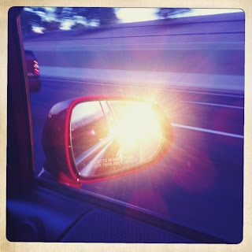

Recovered weblog entry
My sunrise

If it weren't for mirrors, the sun would have only known my tailpipe this morning. Lens: Helga Viking
Film: Ina's 1969

Recovered weblog entry

If it weren't for mirrors, the sun would have only known my tailpipe this morning. Lens: Helga Viking
Film: Ina's 1969